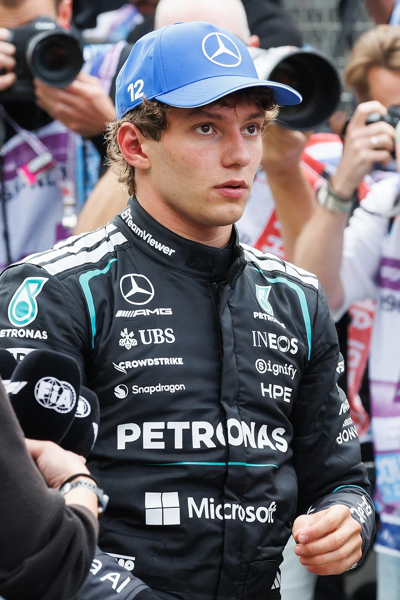

O Grande Prêmio da Cidade do México deste ano, disputado neste domingo, 1º de novembro, entrou para a história da Fórmula 1 por dois motivos. Na pista, Max Verstappen venceu uma corrida movimentada, marcada por disputas entre os pilotos da Ferrari, interrupção com bandeira vermelha e uma decisão apertada pela vitória. Na briga pelo campeonato, porém, o protagonista foi Andrea Kimi Antonelli, que terminou em terceiro e conquistou seu primeiro título mundial.
O italiano da Mercedes chegou ao Autódromo Hermanos Rodríguez precisando apenas da nona colocação para assegurar matematicamente o campeonato. Mas fez mais: largou em quarto, enfrentou as mudanças na corrida e subiu ao pódio, atrás de Verstappen e Lewis Hamilton.
Com 20 anos, Antonelli superou o recorde de Sebastian Vettel, campeão em 2010 aos 23 anos, de piloto mais jovem a conquistar o título. Além disso, tornou-se o primeiro italiano a conquistar o Mundial de Pilotos desde Alberto Ascari, em 1953, encerrando uma espera de 73 anos.
Como foi o Grande Prêmio
A corrida começou com Lewis Hamilton na pole position, a primeira conquistada pelo britânico em um GP desde sua transferência para a Ferrari. George Russell largou em segundo, enquanto Antonelli ocupava a quarta posição e Verstappen saía do quinto lugar.
A largada colocou os pilotos da Ferrari no centro das atenções. Charles Leclerc pressionou Hamilton nas primeiras curvas, e os dois saíram da pista durante a disputa. Leclerc atravessou a grama e assumiu a liderança, enquanto Verstappen aproveitou a situação para ultrapassar Hamilton.
Os comissários avaliaram que Leclerc havia obtido vantagem ao deixar os limites da pista e aplicaram uma penalidade de cinco segundos ao piloto. A punição acabou sendo determinante para a disputa da vitória.
Verstappen assumiu a liderança efetiva durante a rodada de paradas, quando Leclerc cumpriu sua penalidade, e passou a administrar a corrida com Hamilton como principal perseguidor.
O holandês também apostou em uma estratégia diferente na primeira parte da prova, começando com pneus médios, enquanto outros concorrentes da frente utilizaram compostos macios.
A combinação entre estratégia, largada e execução colocou a Red Bull em posição de buscar a vitória, mesmo depois de um sábado em que Verstappen não conseguiu largar nas primeiras posições.
Bandeira vermelha, acidente e tensão na reta final
Um dos momentos mais importantes aconteceu quando Valtteri Bottas sofreu um forte acidente com a Cadillac. Uma falha na suspensão dianteira esquerda provocou a batida na primeira curva, levando à entrada do Safety Car.
A direção de prova posteriormente acionou a bandeira vermelha por causa dos danos às barreiras de proteção.
A interrupção reorganizou a disputa e colocou os pilotos novamente diante de uma largada parada. Verstappen manteve a liderança, enquanto Hamilton avançou para a segunda colocação e Antonelli ultrapassou Leclerc para assumir o terceiro lugar.
A corrida ainda teve outra intervenção do Safety Car depois de um acidente envolvendo Oscar Piastri e Arvid Lindblad. O piloto da Racing Bulls abandonou, enquanto Piastri recebeu uma punição de dez segundos após a prova.
Na última relargada, Verstappen conseguiu permanecer à frente de Hamilton. O britânico pressionou até as voltas finais, mas não encontrou espaço para completar a ultrapassagem.
Depois de 71 voltas, o piloto da Red Bull cruzou a linha de chegada apenas 0,799 segundo à frente de Hamilton. Antonelli terminou 4,006 segundos atrás do vencedor.
Foi a terceira vitória de Verstappen na temporada de 2026 e a sexta de sua carreira no Grande Prêmio da Cidade do México.
Veja abaixo os melhores momentos da corrida abaixo:
Resultado final do GP
A classificação definitiva sofreu alterações após penalidades aplicadas depois da bandeirada. Com isso, Gabriel Bortoleto ganhou posições e terminou na zona de pontuação.
- 1. Max Verstappen (Red Bull)
- 2. Lewis Hamilton (Ferrari)
- 3. Kimi Antonelli (Mercedes)
- 4. Charles Leclerc (Ferrari)
- 5. Lando Norris (McLaren)
- 6. George Russell (Mercedes)
- 7. Liam Lawson (Racing Bulls)
- 8. Gabriel Bortoleto (Audi)
- 9. Isack Hadjar (Red Bull)
- 10. Ryo Hirakawa (Haas)
Bortoleto foi beneficiado pelas punições de adversários e conquistou quatro pontos com a oitava colocação. O japonês Ryo Hirakawa, que fez sua estreia em um Grande Prêmio pela Haas, também pontuou ao terminar em décimo.
A Alpine foi uma das principais prejudicadas pelas decisões posteriores à corrida. Franco Colapinto e Pierre Gasly perderam posições depois de receberem punições por infrações relacionadas às bandeiras amarelas.
O campeão mais jovem da história da Fórmula 1
Embora Verstappen tenha vencido a corrida, o maior acontecimento do fim de semana foi o primeiro título mundial de Kimi Antonelli.
Nascido em Bolonha, na Itália, em 25 de agosto de 2006, Antonelli chegou à Fórmula 1 em 2025 pela Mercedes, ocupando a vaga deixada por Lewis Hamilton, que se transferiu para a Ferrari.
Sua promoção aconteceu depois de uma trajetória acelerada nas categorias de formação. O italiano conquistou títulos na Fórmula 4 e na Fórmula Regional antes de chegar à Fórmula 2, sem disputar uma temporada completa de Fórmula 3.
A decisão da Mercedes representou uma aposta importante em um talento jovem. Na temporada de estreia, Antonelli enfrentou dificuldades e oscilações de rendimento, mas conseguiu três pódios.
Em 2026, o cenário mudou radicalmente.
O piloto iniciou uma sequência de resultados que o colocou rapidamente na disputa pela liderança. A primeira vitória veio no GP da China, em março, quando superou George Russell e se tornou o segundo vencedor mais jovem da história da Fórmula 1.
Na sequência, venceu também os Grandes Prêmios do Japão, Miami, Canadá e Mônaco, construindo uma série de cinco triunfos consecutivos.
O italiano ainda conquistou vitórias na Bélgica, Itália, Espanha e Estados Unidos. O triunfo em Austin, na etapa imediatamente anterior ao México, foi seu nono na temporada e deixou o título praticamente encaminhado.
Ao assegurar matematicamente o campeonato, Antonelli acumulava nove vitórias em Grandes Prêmios, 16 pódios e sete pole positions na temporada de 2026.
O desempenho colocou o piloto em um grupo extremamente restrito de competidores capazes de conquistar o Mundial de Fórmula 1 já no segundo ano na categoria.
Os recordes históricos conquistados por Antonelli
O título deste ano não representou apenas a chegada de um novo campeão ao grid. Antonelli também estabeleceu marcas importantes durante sua ascensão.
Na China, tornou-se o piloto mais jovem a conquistar uma pole position em um Grande Prêmio. Com a vitória em Xangai, também passou a ser o mais jovem a vencer uma corrida largando da pole.
No Japão, tornou-se o líder mais jovem de um Mundial de Fórmula 1. Em Mônaco, conquistou outra marca de precocidade ao vencer o tradicional Grande Prêmio nas ruas de Monte Carlo.
Em setembro, escreveu outro capítulo especial ao vencer o GP da Itália em Monza. Foi a primeira vitória de um piloto italiano em seu Grande Prêmio nacional desde Ludovico Scarfiotti, em 1966.
O título mundial também encerrou um longo intervalo para o automobilismo italiano.
Antes de Antonelli, apenas dois pilotos do país haviam conquistado o Mundial de Fórmula 1: Giuseppe Farina, primeiro campeão da história em 1950, e Alberto Ascari, vencedor das temporadas de 1952 e 1953.
Antonelli passou a integrar essa lista como o terceiro italiano campeão mundial e o primeiro piloto nascido nos anos 2000 a conquistar o título da categoria.
Também retirou de Vettel um recorde que permanecia intacto desde 2010: o de campeão mundial mais jovem da Fórmula 1.
Como ficou a classificação
Com o resultado, Antonelli chegou aos 380 pontos no Mundial de Pilotos e garantiu o campeonato com quatro etapas de antecedência.
- Kimi Antonelli (Mercedes) — 380 pontos
- Max Verstappen (Red Bull) — 261 pontos
- Lewis Hamilton (Ferrari) — 259 pontos
- George Russell (Mercedes) — 250 pontos
- Charles Leclerc (Ferrari) — 245 pontos
A Mercedes também saiu fortalecida do México na disputa do Mundial de Construtores. A equipe alemã chegou aos 630 pontos, à frente da Ferrari, com 504, e da Red Bull, com 382.
Diferentemente do campeonato de pilotos, porém, a disputa entre as equipes ainda não está encerrada.
Gabriel Bortoleto pontua pela Audi no México
Para o público brasileiro, outro destaque da etapa foi Bortoleto.
O piloto da Audi terminou inicialmente fora da zona de pontuação, mas avançou na classificação depois das penalidades aplicadas a outros competidores.
Com o oitavo lugar definitivo, Bortoleto acrescentou quatro pontos à sua campanha e chegou aos 14 no Mundial de Pilotos.
O resultado ganhou importância em uma corrida marcada por diferentes estratégias, acidentes e intervenções dos comissários. O brasileiro conseguiu completar as 71 voltas e aproveitar as mudanças na classificação para sair do México com pontos.
O legado do título de Kimi Antonelli
O Grande Prêmio do México de 2026 ficará marcado como a corrida em que duas histórias diferentes se encontraram.
Max Verstappen reafirmou sua capacidade de vencer mesmo em circunstâncias difíceis, aproveitando oportunidades na largada, executando uma estratégia competitiva e resistindo à pressão de Hamilton até a bandeirada.
Antonelli, por outro lado, completou uma transformação que começou muito antes de sua estreia na Fórmula 1. O jovem escolhido pela Mercedes para substituir um heptacampeão mundial passou de promessa a campeão em sua segunda temporada.
A conquista também representou um resultado expressivo para a aposta de longo prazo da equipe alemã em seu programa de desenvolvimento de pilotos.
Mais do que os números de vitórias, pódios e pontos, o campeonato de 2026 colocou Antonelli em uma posição histórica. Ao quebrar o recorde de Vettel e devolver o título à Itália depois de 73 anos, ele estabeleceu uma referência de precocidade para as próximas gerações.
No México, Verstappen recebeu o troféu de vencedor da corrida. Mas foi Antonelli quem deixou o Autódromo Hermanos Rodríguez com a conquista mais importante da temporada: o título mundial de Fórmula 1 e um lugar definitivo na história do automobilismo.